Overview
In this assignment, I got to learn about how to manipulate meshes and create better surfaces in graphics. I first learned how to apply de Casteljau algorithm in order to evaluate both Bezier curves and Bezier surfaces. Then, I learned how to work with the HalfEdgeMesh class in order to get into the lower level framework of how to modify meshes in order to produce different visual effects. I implemented area-weight vertex normals which allowed me to visualize Phong shading. I also learned how to implement edge flipping and edge splitting during which I learned how to work with and debug pointers. Finally, I used both edge splitting and flipping in loop subdivision to produce nice smooth images, which I can relate as the surface version of color rasterization filtering that we did in the first assignment.
Section I: Bezier Curves and Surfaces
Part 1: Bezier Curves with 1D de Casteljau Subdivision
Briefly explain de Casteljau's algorithm and how you implemented it in order to evaluate Bezier curves.
While implementing evaluate_step, I used de Casteljau’s algorithm in order to evaluate Bezier curves.
De Casteljau’s algorithm recursively generates n-1 intermediate points using n control points until there
is a single point remaining which is on the final Bezier curve. The intermediate points are produced
by performing a linear interpolation on two control points using a parameter that determines
the proportionate distance between the points, t, which ranges from 0 to 1.
Take a look at the provided .bzc files and create your own Bezier curve with 6 control points of your choosing. Use this Bezier curve for your screenshots below.
Here is my bezier curve produced by 6 control points. I created an S-like curve as shown below:
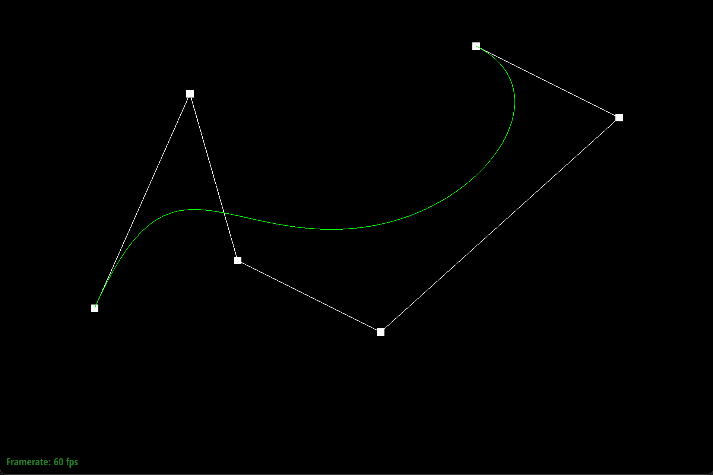
Show screenshots of each step / level of the evaluation from the original control points down to the final evaluated point. Press E to step through. Toggle C to show the completed Bezier curve as well.
|
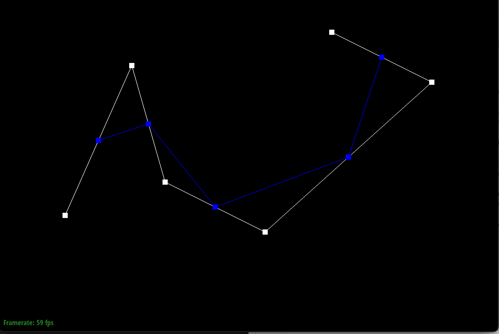
Level 0
|
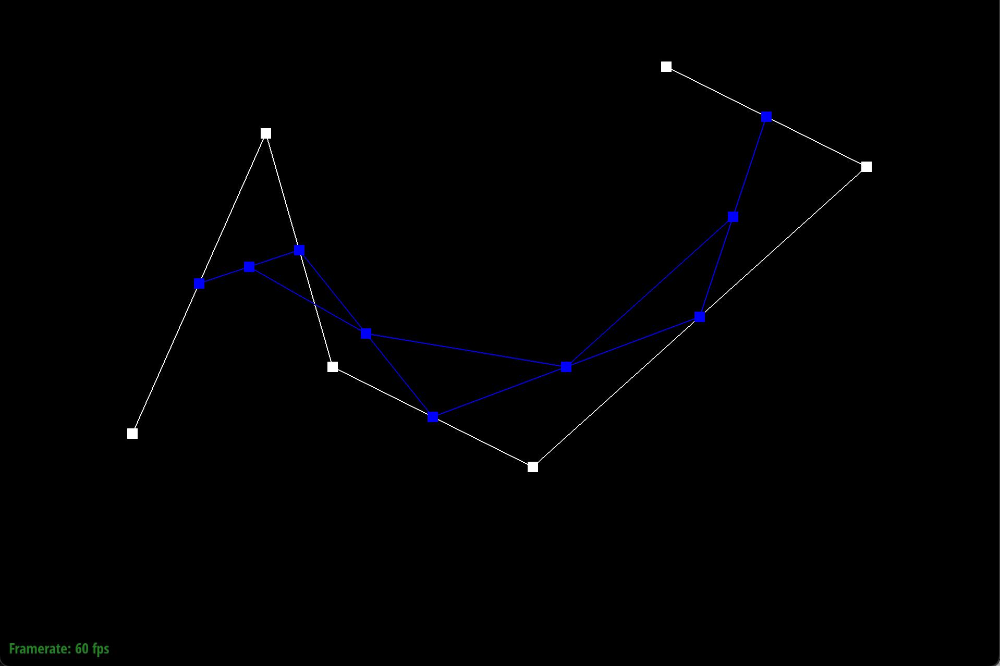
Level 1
|
|
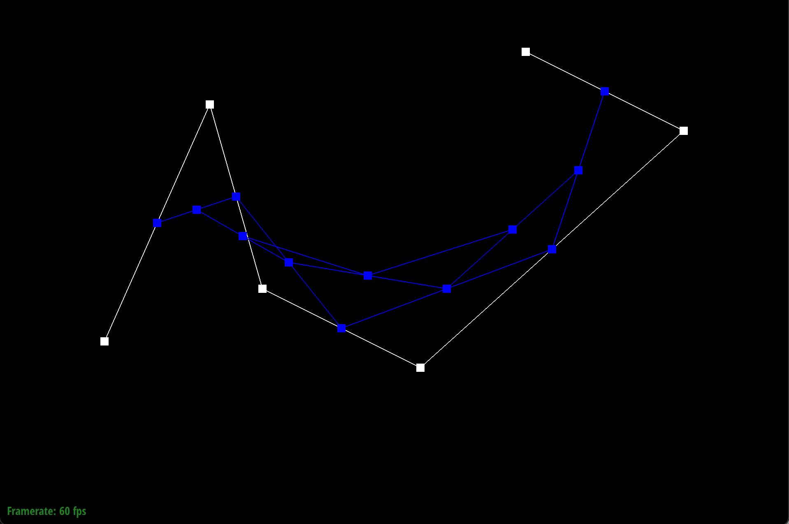
Level 2
|
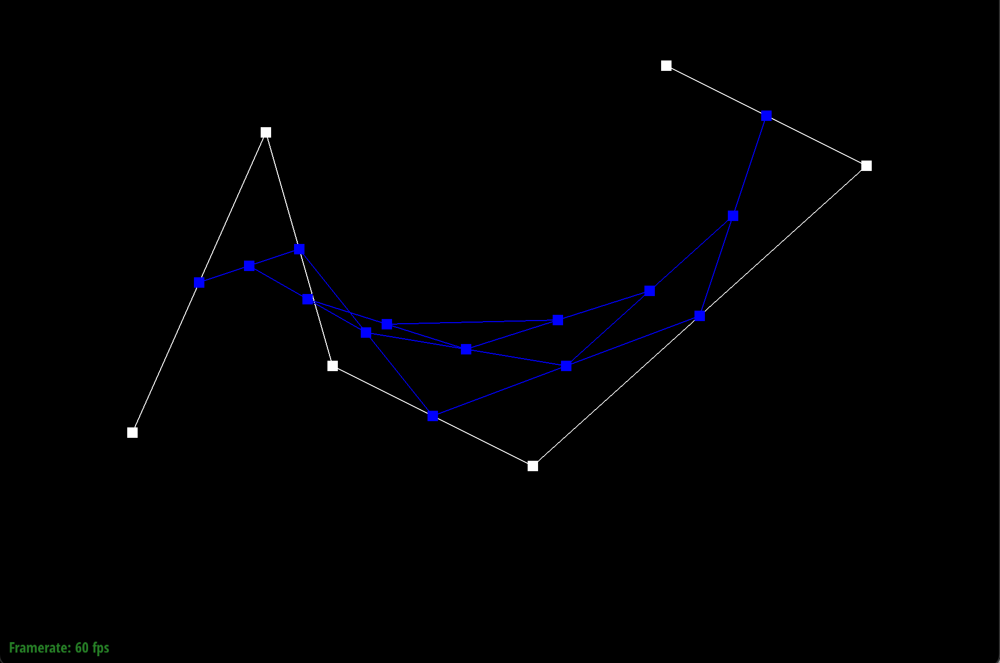
Level 3
|
|
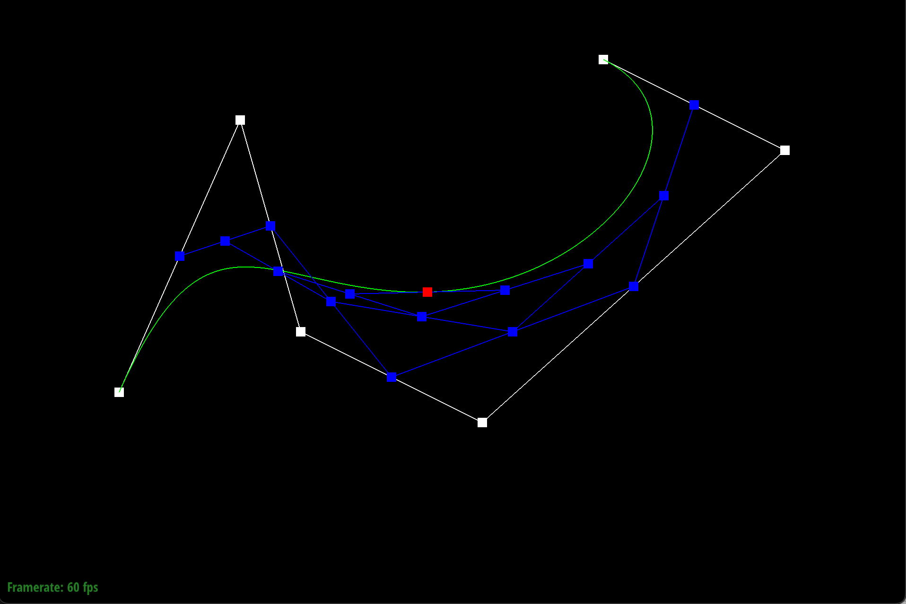
Level 4
|
Show a screenshot of a slightly different Bezier curve by moving the original control points around and modifying the parameter \(t\) via mouse scrolling.
When I move the control points, you can see the effect reflected in the image below.
Additionally, I decreased the parameter t which can be seen in the interpolated points
being closer to point pi as opposed to pi+1.
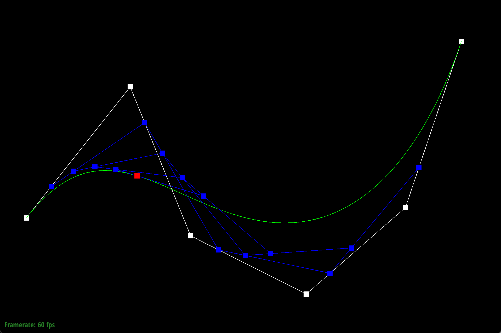
Part 2: Bezier Surfaces with Separable 1D de Casteljau
Briefly explain how de Casteljau algorithm extends to Bezier surfaces and how you implemented it in order to evaluate Bezier surfaces.
We can use de Casteljau algorithm from the previous part and extend it to evaluate points on Bezier surfaces, however, for surfaces we must apply de Casteljau algorithm in two different directions (horizontal and vertical).
In order to implement this, I completed the helper functions evaluateStep() and evaluate1D(). In evaluateStep(), I take in a 1D array of Vector3D control points and return the intermediate points from linear interpolation. In evaluate1D(), I continuously call evaluateStep() on the input’s intermediate points until I am left with a single point for a Bezier curve. Finally, to determine the Bezier surface, I complete evaluate() which calls evaluate1D() for each of the rows of control points on parameter u in order to get their respective Bezier curve. I then call evaluate1D() on those Bezier curves on parameter v, in order to get the final Bezier surface point.
Show a screenshot of bez/teapot.bez (not .dae) evaluated by your implementation.
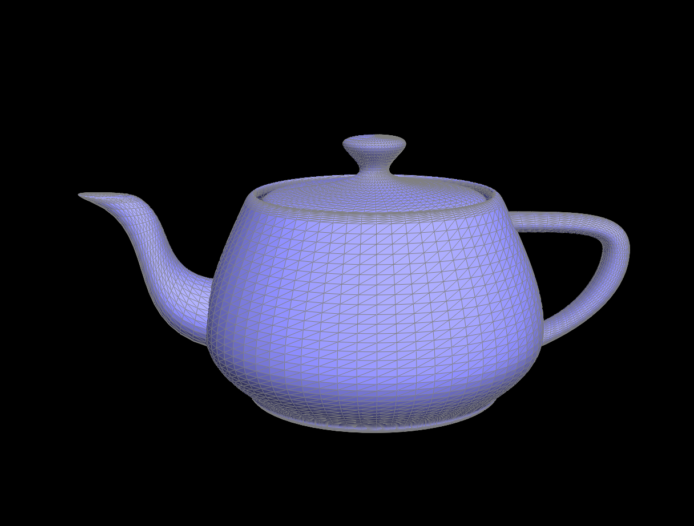
Section II: Triangle Meshes and Half-Edge Data Structure
Part 3: Area-Weighted Vertex Normals
Briefly explain how you implemented the area-weighted vertex normals.
Here are the steps I took in my implementation:
- First retrieve the vector’s halfedge using this->halfedge()
- Iterate through all of the faces that contain the current vertex by traversing through halfedge->twin()->next() until the original halfedge is retrieved.
- Within each iteration, I obtained the 3 vertices making up the current triangle and used them to create the vectors from the original vertex to the other two vertices. I then took the cross product of the vectors to obtain the normal and added it to the sum of all normal vectors of each face.
- Finally, I normalize the sum of normals and return the resulting vector.
Show screenshots of dae/teapot.dae (not .bez) comparing teapot shading with and without vertex normals. Use Q to toggle default flat shading and Phong shading.
|
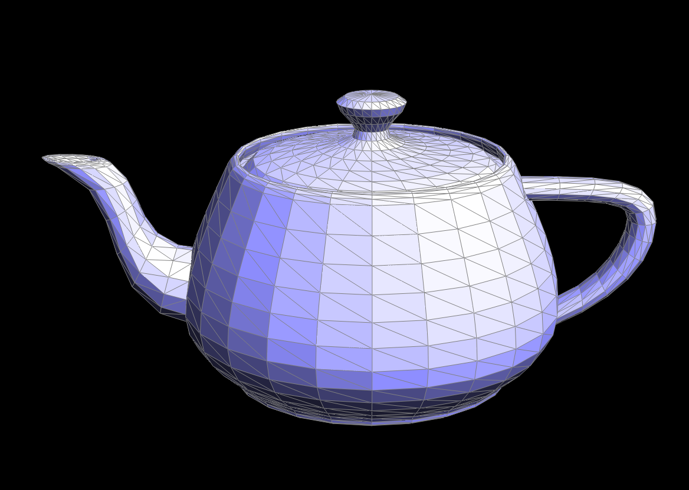
Without Vertex Normals
|
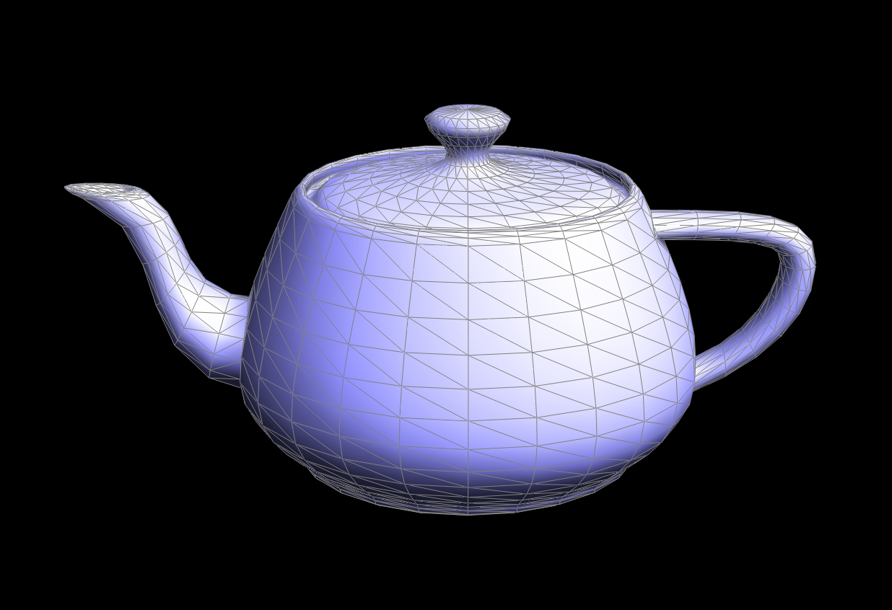
With Vertex Normals
|
Part 4: Edge Flip
Briefly explain how you implemented the edge flip operation and describe any interesting implementation / debugging tricks you have used.
I primarily followed the example provided in the primer document under resources for how to evaluate edge flipping. The major change I made included redrawing the diagram to account for the CCW directionality we use when associating halfedges with faces. Here is the diagram I drew of the before and after of edge flipping:
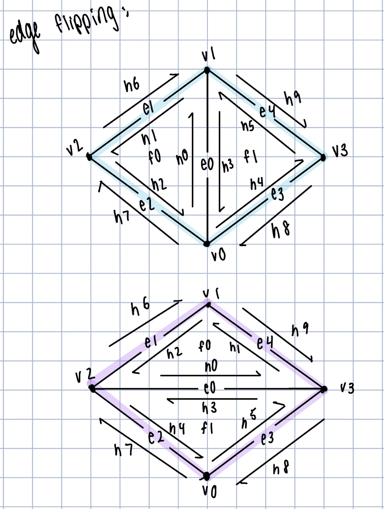
I then followed the document to list out all of my current mesh elements for flipping an edge including all vertices, edges, faces, and halfedges. I then reassigned the pointers in that order to match the one shown in the after edge flip diagram. For vertices, edges, and faces, I reassigned their halfedge pointers. Finally, for halfedges, I reassigned their pointers by using setNeighbors().
Show screenshots of the teapot before and after some edge flips.
I have demonstrated edge flips using the bean.dae file.
|
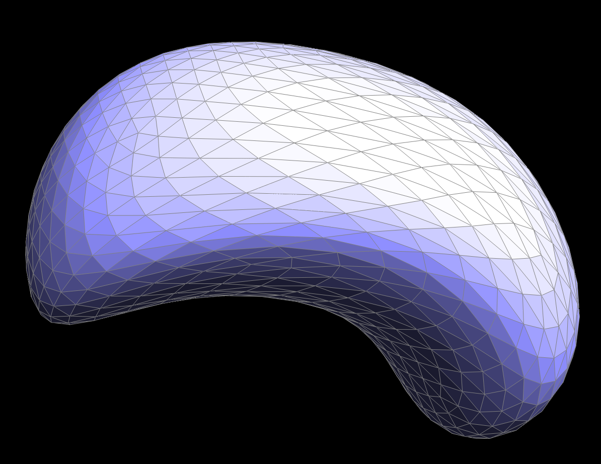
No flips
|
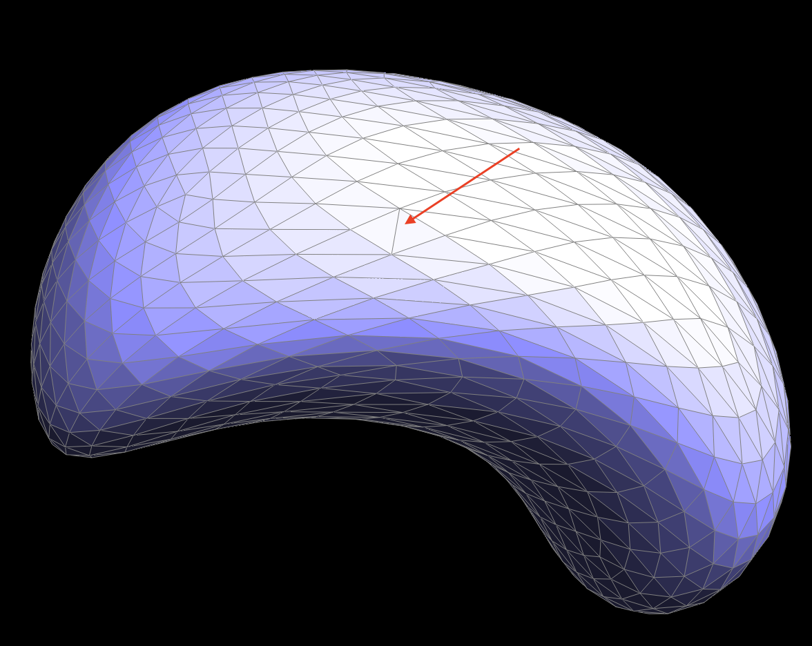
One flip, indicated by red arrow
|
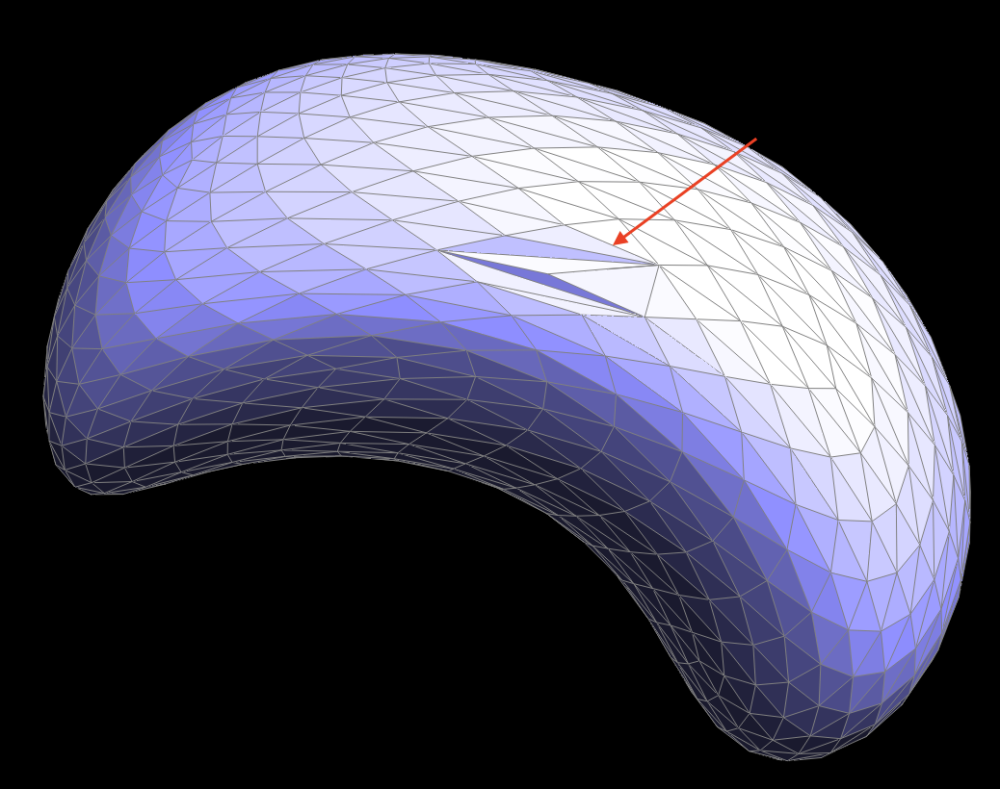
Several adjacent flips, indicated by red arrow
|
Write about your eventful debugging journey, if you have experienced one.
The issue that I had to debug was triangle meshes disappearing if I tried to flip their edge. Since this part had so many reassignments, I figured my error was reassigning a pointer to the wrong one. I inserted check_for statements for all of my halfedges, and I was able to figure out that one of my halfedge’s properties were set incorrectly. It was honestly pretty difficult and tedious to have to debug this due to having to reference pointer addresses.
Part 5: Edge Split
Briefly explain how you implemented the edge split operation and describe any interesting implementation / debugging tricks you have used.
I followed the same workflow as part 4, where I first drew a diagram that represents an edge split, attached below. How I visualize edge splitting is that we are now creating a new perpendicular edge in the middle of the edge that we want split. Each of these edges create four sub edges and effectively create four smaller triangles, two of which are made up of all new half edges. Here is the diagram that explains it better:
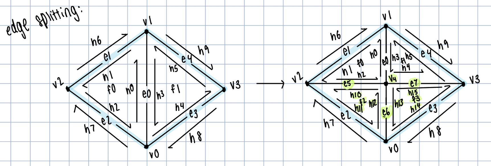
Again implementation-wise, I followed the same steps as Part 4, except after obtaining all of the mesh’s elements, I also created new elements since we are adding a new vertex. I created 1 new vertex, 3 new edges, 2 new faces, and 6 new halfedges. For the vertex, I filled in its position field to be the midpoint between the two vertices of the edge we are splitting by averaging the two vertices’ position. I then, again, followed the diagram and reassigned all of the element’s pointers by first assigning the vertices’, faces’, and edges’ halfedge pointer and then finally halfedges using setNeighbor(). Also note that I reassigned all elements and their fields regardless if they actually changed or not.
Show screenshots of a mesh before and after some edge splits.
In the following screenshots, I used the cow.dae file.
|
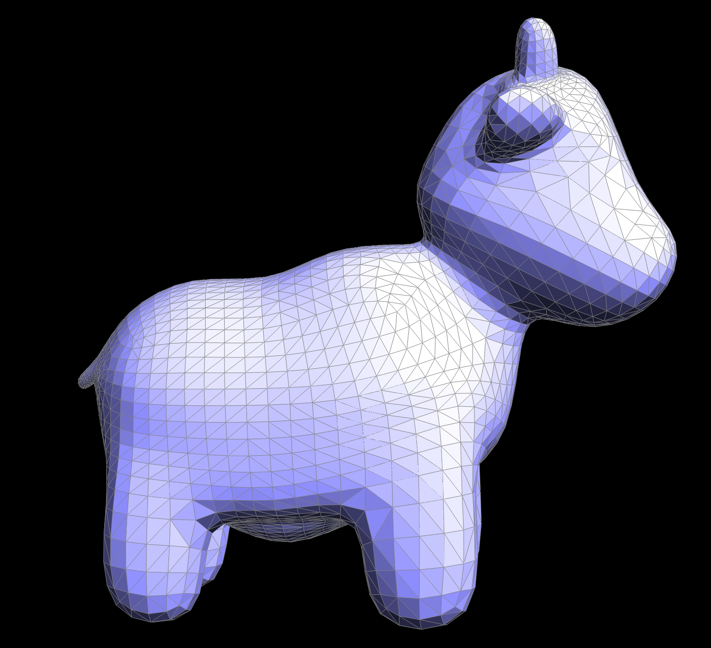
No splitting
|
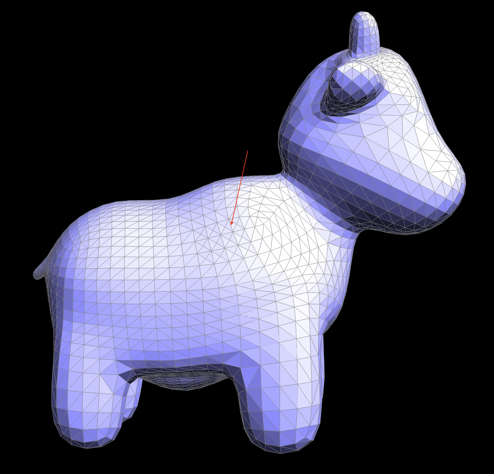
Some edge splitting, indicated by red arrow
|
Show screenshots of a mesh before and after a combination of both edge splits and edge flips.
|
No modifications
|
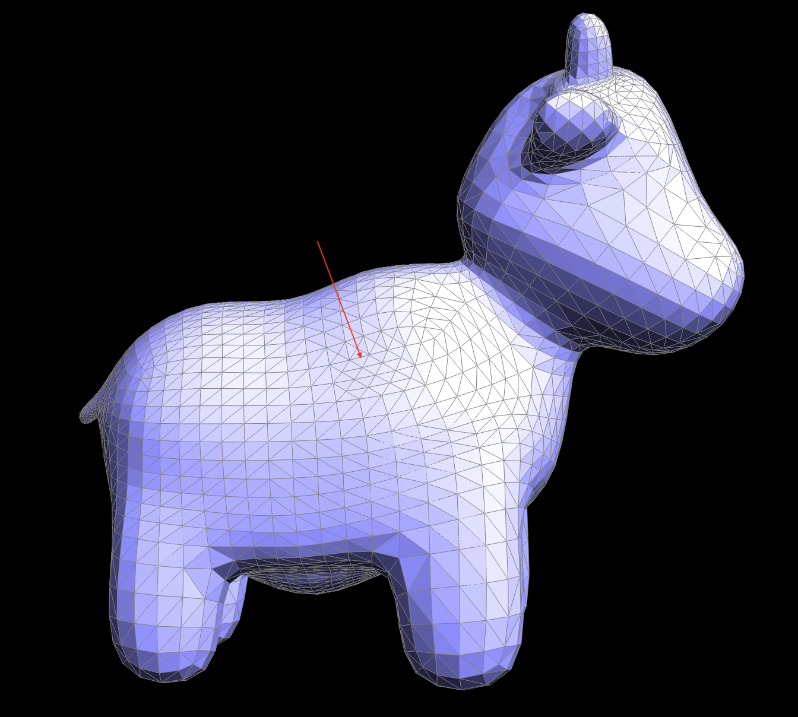
Clear splitting then flipping middle edges
|
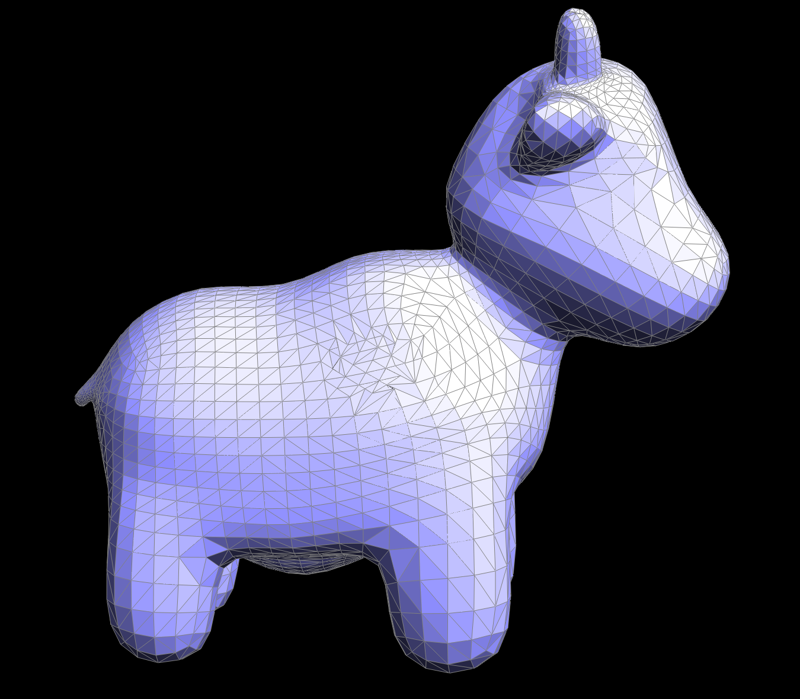
Lots of flipping and splitting
|
Write about your eventful debugging journey, if you have experienced one.
I had the same experience as in part 4, where I had disappearing meshes! Instead of using check_for() which was pretty tedious last time, I decided to first double check my diagram and recheck my pointer reassignemnt. During this procedure, I managed to figure out my error before having to debug through the debugger. I think it is easier to diagram correctly and use it as a reference later than it is to debug the pointers using check_for.
Part 6: Loop Subdivision for Mesh Upsampling
Briefly explain how you implemented the loop subdivision and describe any interesting implementation / debugging tricks you have used.
In order to implement the loop subdivision, I followed the recommended workflow outlined below:
-
Get new positions for existing vertices in the mesh: I iterate through the all vertices in a mesh by starting from mesh.verticesBegin() and ending at mesh.verticesEnd(). I then calculated the variables below to get the new positions
- n = v->degree()
- u = 3/(8n) or if n==3, u=3/16
- original_position = vertex->position
- original_neighbor_position_sum: iterate through all neighboring vertices from a starting vertex and sum their positions
I used these variables to update each vertex’s newPosition to be (1-n*u)*original_position + u*original_neighbor_position_sum.
I set the isNew flag of this vertex to be false
-
Get new vertex position from splitting edges: Iterate through edges from mesh.edgesBegin() to mesh.edgesEnd() and get all of the 4 vertices from the incident faces of the edge. I then weighted them accordingly by ⅜ and ⅛ to get the new position and updated edge->newPosition. Finally, I set the edge isNew flag to false.
- Split all edges in the mesh: Iterate through edges from mesh.edgesBegin() to mesh.edgesEnd(). Obtain the vertices that make up the edge. Then check to see if edge->isNew is false and that both vertices’ isNew is false before flipping to ensure we are only flipping old existing edges. Update the vertex's new position to be the edge’s set newPosition from splitting.
- Flip new edges: Iterate through edges again similarly to past steps and get the vertices. Check to see if edge->isNew is true and that the edge is connecting one old edge and one new edge before flipping.
- Iterate through all vertices and update their position pointer to be their newPosition. Change all vertices isNew to false.
Take some notes, as well as some screenshots, of your observations on how meshes behave after loop subdivision. What happens to sharp corners and edges? Can you reduce this effect by pre-splitting some edges?
The cube is the easiest to visualize, where we can see that each mesh gets divided into smaller meshes. The angle at which the meshes also point are more well rounded and overall edges and sharp corners become rounded the more you continue to upsample the mesh. Overall you see a smoother appearance.
|
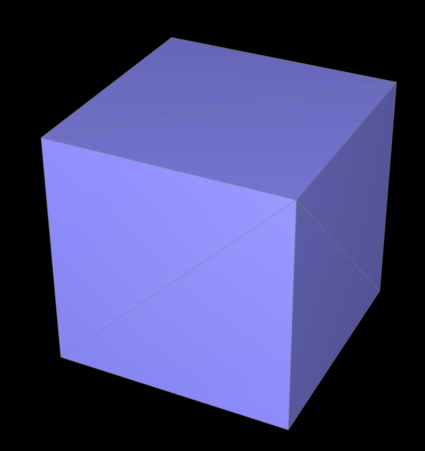
Cube on render, no upsampling
|
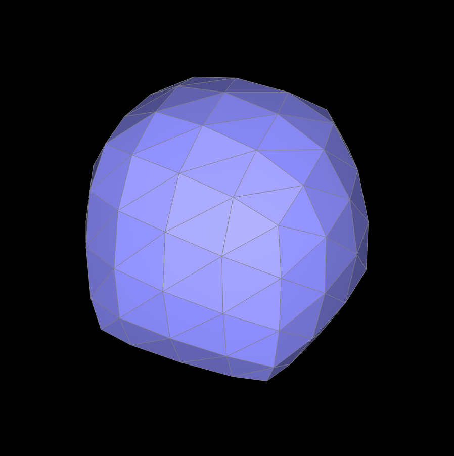
Performing 2 loop subdivisions
|
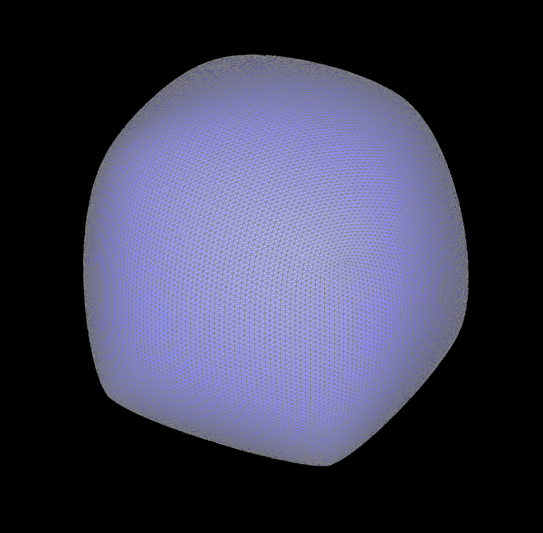
Many loop subdivisions, assymmetry observed.
|
Load dae/cube.dae. Perform several iterations of loop subdivision on the cube. Notice that the cube becomes slightly asymmetric after repeated subdivisions. Can you pre-process the cube with edge flips and splits so that the cube subdivides symmetrically? Document these effects and explain why they occur. Also explain how your pre-processing helps alleviate the effects.
I do a slight visual issue where if I upsample with sharp corners the corners protrude more while the rest of the image is still rounding out. I realized the asymmetry is caused by there only being one diagonal edge on each face of the cube. If I split the on every cube edge, the end result preserves the cube shape much better. You can compare the result to the original upsampled cube above.
|
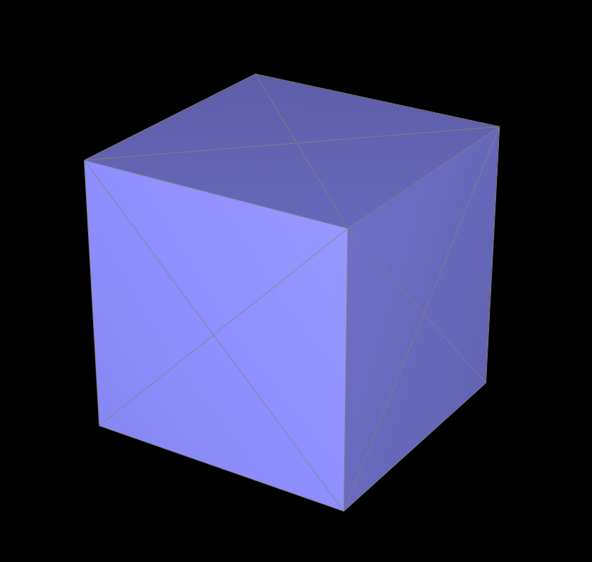
Additional split on each diagonal edge
|
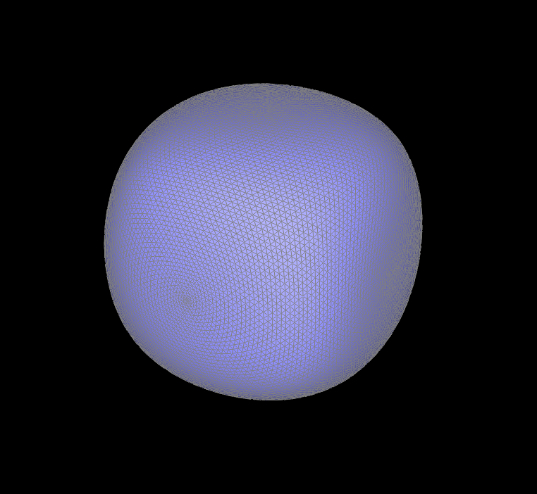
Loop subdivision with preprocessed splits
|